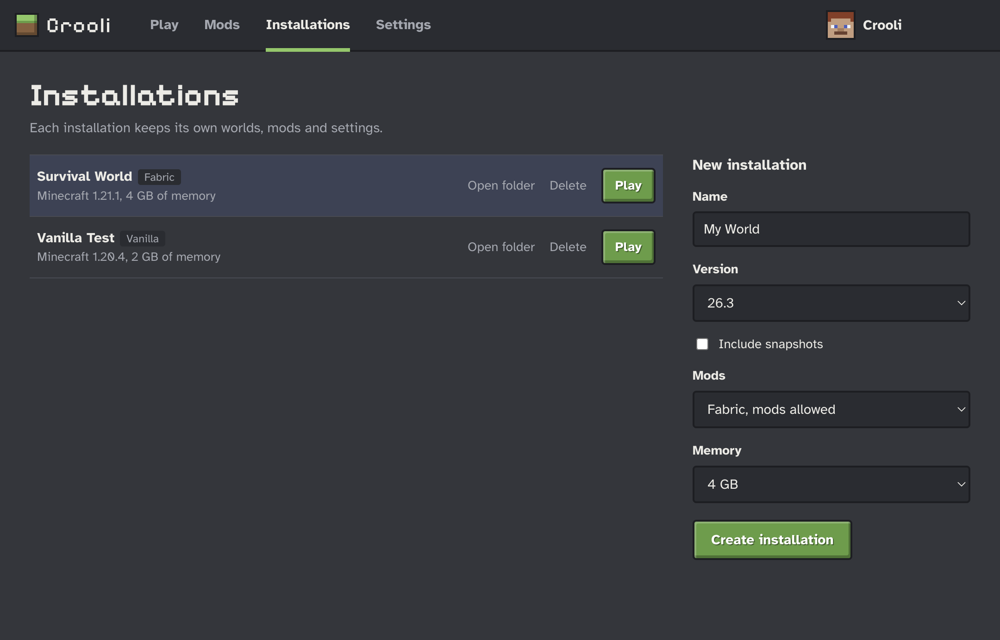
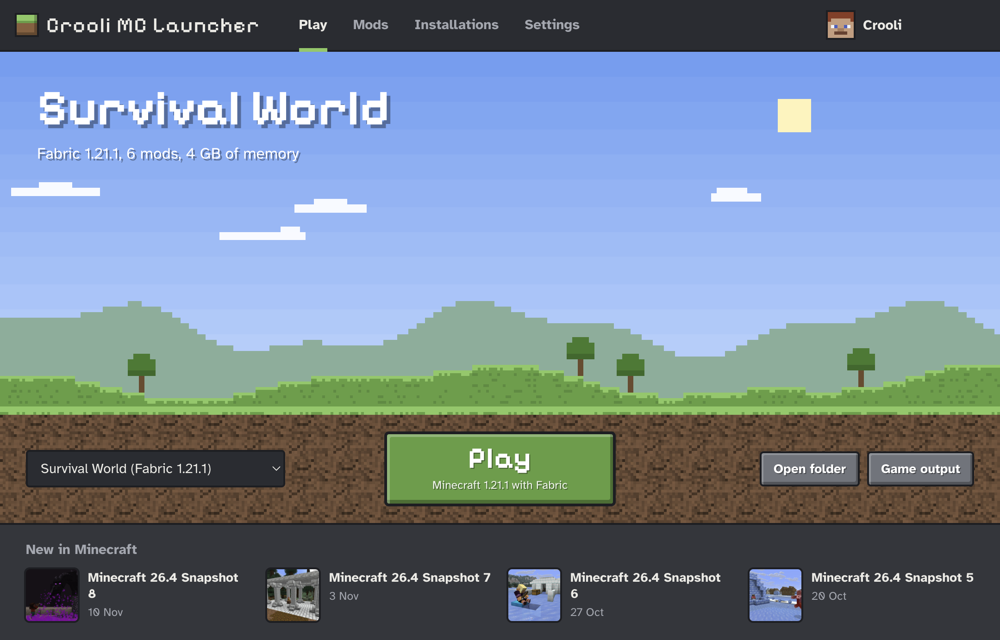
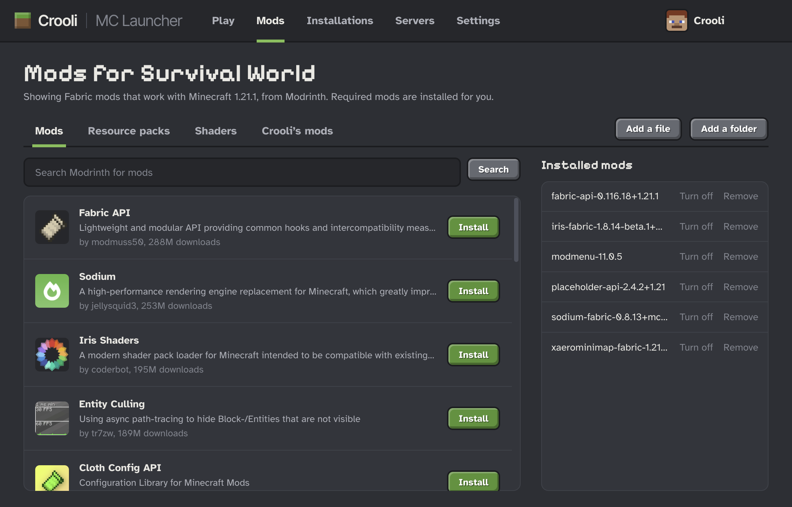

1
Make an installation
Name it, pick a Minecraft version and choose Fabric if you want mods. Each installation keeps its own worlds, mods and memory, so a modded survival world never touches a quick vanilla one.

A small launcher for Mac and Windows. Pick a version and press Play: it downloads the game and Java for you, and installs Fabric mods from Modrinth along with everything they need.

Name it, pick a Minecraft version and choose Fabric if you want mods. Each installation keeps its own worlds, mods and memory, so a modded survival world never touches a quick vanilla one.

Search Modrinth from inside the launcher. Results only show mods that run on your version, and anything a mod needs, like Fabric API, is installed with it. Turn mods off without deleting them.

The first launch downloads the game, its assets and the right Java. After that it starts straight away. The Play screen's sky follows your clock: blue at lunch, orange at dusk, stars after nine.
The launcher fetches all of this itself and checks every file it downloads.
Free and MIT licensed. For playing with mods without learning how mod loaders work.
git clone https://github.com/xandertaylorx/crooli-mc-launcher && cd crooli-mc-launcher && npm install && npm start
Needs Node.js to run from source.